Tip: Filter by location, faith, language or shared history, then tick "Compare" on up to three cultures to see them side-by-side.
| Culture | Location | Population | Languages | Main faiths | Key festivals | Compare |
|---|
African Cultures
Africa · Continent & DiasporaDemographics & Beliefs
Encompassing a continent of about 1.5 billion people and upwards of 3,000 distinct ethnic groups, Africa is home to the greatest human diversity on Earth. While major world religions like Islam and Christianity are deeply embedded across the continent, they are frequently intertwined with rich Indigenous animist traditions that revere ancestors and the natural world. A powerful philosophical thread unifying many sub-Saharan cultures is Ubuntu—the belief that "I am because we are," placing communal well-being and interconnectedness above strict individualism. Life transitions are heavily honored through intricate rites of passage, and textiles like vibrant Kente cloth, Ankara wax prints, and Maasai Shuka act as a profound canvas for storytelling, status, and regional pride.
Culinary Traditions
African cuisine masterfully utilizes indigenous, drought-resistant staples such as cassava, millet, sorghum, yams, and plantains. Culinary profiles shift dramatically across the continent—from the fragrant, slow-cooked tagines of the Maghreb and the spicy, complex stews of West Africa to the maize-based Ugali or Pap paired with roasted meats in the East and South. Dining is inherently social and tactile, frequently centering around a shared communal bowl, reinforcing the bonds of family and community through the act of breaking bread together.
History & Evolution
As the cradle of humankind, Africa's historical timeline features formidable ancient empires like Mali, Songhai, Aksum, and Great Zimbabwe, known for immense wealth, architecture, and centers of learning like Timbuktu. The continent endured and survived the devastating eras of the transatlantic slave trade and European colonialism, fighting fiercely for independence throughout the 20th century. Today, Pan-Africanism and a rapidly expanding global diaspora celebrate this resilience, deeply influencing international politics and global economic frameworks.
Notable Features & Figures
African oral history is preserved by Griots—master storytellers, poets, and musicians who carry the genealogical and historical memory of their people. The continent's musical DNA, characterized by complex polyrhythms and instruments like the Djembe and Mbira, serves as the foundational root of global genres including jazz, blues, reggae, and modern Afrobeats. The culture is defined by monumental leaders and thinkers, from Nelson Mandela and Wangari Maathai to literary giants like Chinua Achebe, who have fundamentally shaped global human rights and literature.
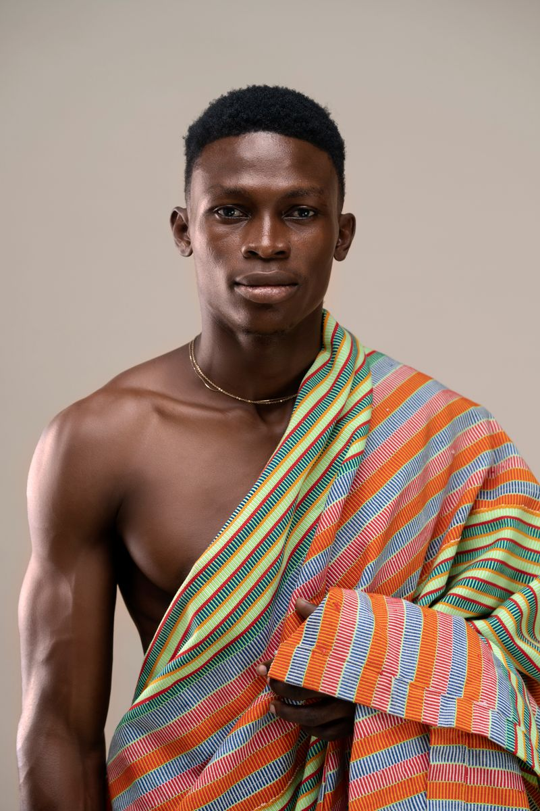
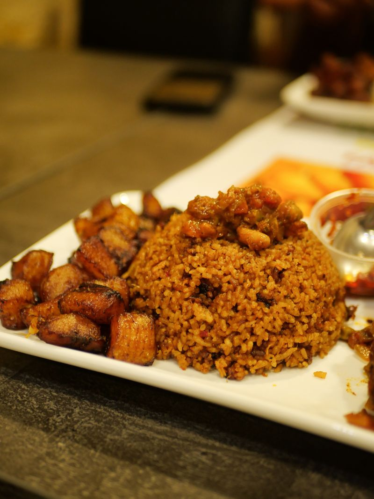
Yoruba Culture
Africa · West AfricaDemographics & Beliefs
Flourishing primarily in Southwestern Nigeria, Benin, and Togo, the Yoruba people number over 45 million globally, representing one of Africa's largest and most influential ethnic groups. The spiritual landscape is dynamic, seamlessly weaving Christianity and Islam with the ancient Isese religion, centered on the worship of the Supreme Creator (Olodumare) and a pantheon of intermediary spirits (Orisas). Social structure is deeply rooted in respect for age and hierarchy, exemplified by the custom of Idobale (prostration, traditionally by men) and Ikunle (kneeling, traditionally by women) when greeting elders. Rites of passage are monumental, particularly the Isomoloruko, a joyous naming ceremony held about a week after birth (often on the seventh, eighth, or ninth day, depending on family tradition).
Culinary Traditions
Yoruba culinary heritage is bold, textural, and richly aromatic, utilizing indigenous staple crops like yams, cassava, and plantains, elevated by the liberal use of palm oil, deeply flavored locust beans (Iru), and intense scotch bonnet peppers. Signature dishes require immense physical skill to prepare, such as Pounded Yam (Iyan) traditionally served with Egusi (melon seed) soup. Dining is a profoundly communal and tactile experience, with meals traditionally eaten with the right hand.
History & Evolution
The cultural cradle of the Yoruba lies in the ancient, sacred city of Ile-Ife, inhabited since at least the first millennium BCE and flourishing as a powerful city-state between the 11th and 15th centuries CE. The civilization saw massive shifts of power through the expansion of the Oyo Empire, renowned for its cavalry and complex political checks and balances. Tragically, global interaction was violently defined by the transatlantic slave trade. Today, this displacement has evolved into a powerful global diaspora, where Yoruba linguistic and religious fragments profoundly shape Afro-Latin cultures, forming the bedrock of spiritual practices like Santería in Cuba and Candomblé in Brazil.
Notable Features & Figures
The culture is bound by the Yoruba language, a tonal Niger-Congo language where pitch dictates meaning. This musicality extends to the arts, specifically the legendary "talking drum" (Dundun), which mimics the tonal inflections of Yoruba speech to transmit messages. Historically, Yoruba artisans are globally celebrated for their astonishingly realistic bronze, terracotta, and brass portrait heads from ancient Ife. The culture continues to produce monumental global figures, from Wole Soyinka, the first Black African Nobel Laureate in Literature, to Fela Kuti, the pioneering architect of Afrobeat music.
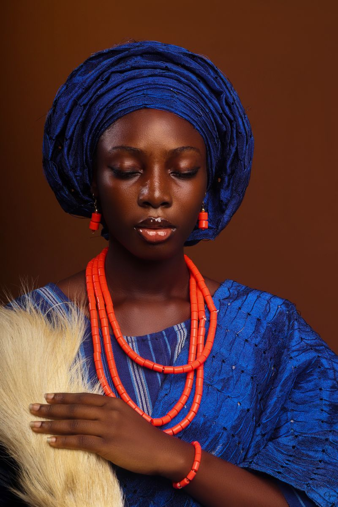
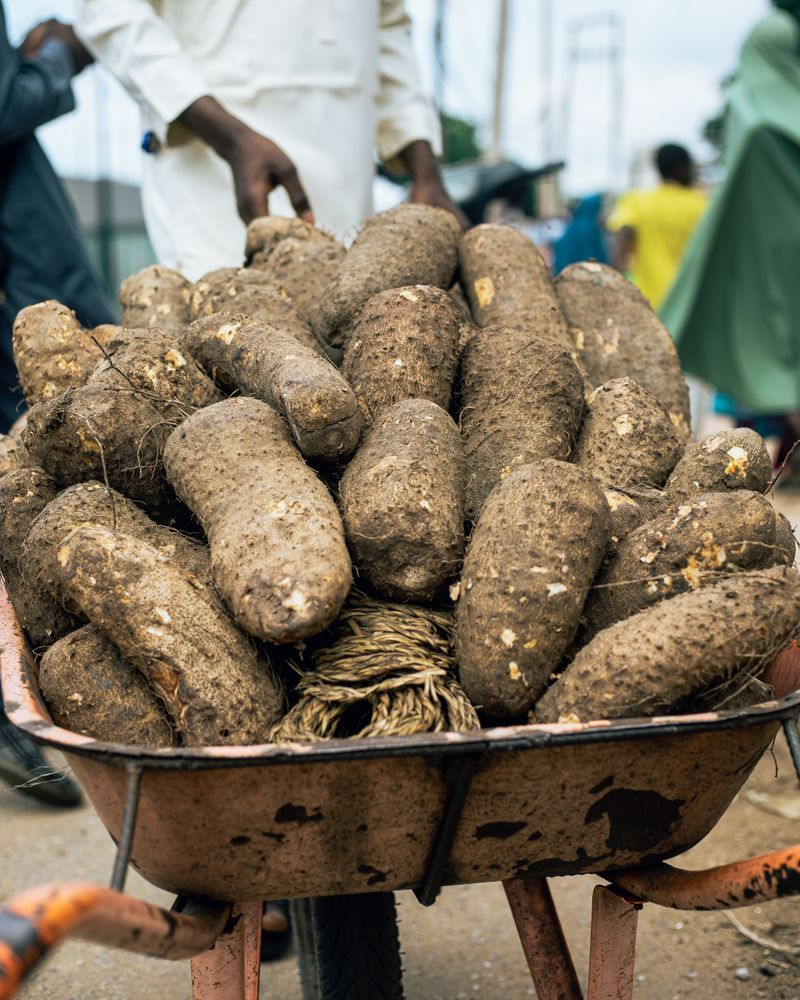
Ethiopian Culture
Africa · Horn of AfricaDemographics & Beliefs
Ethiopia is a nation of about 130 million people and more than 80 ethnic groups, the largest being the Oromo and Amhara. It is one of the world's oldest Christian lands: the Ethiopian Orthodox Tewahedo Church dates to the 4th century, and roughly two-thirds of Ethiopians are Christian. Islam also has deep roots here, as early followers of the Prophet Muhammad found refuge in the Aksumite kingdom around 615 CE, and about a third of Ethiopians are Muslim today. Ethiopia keeps its own calendar, with the New Year (Enkutatash) in September, and celebrates vibrant festivals such as Meskel and Timkat (Epiphany).
Culinary Traditions
Ethiopian food centers on injera, a spongy, slightly sour flatbread made from teff, a tiny grain domesticated in the Ethiopian highlands. Injera serves as both plate and utensil, topped with spicy stews (wat) seasoned with the chili blend berbere and spiced butter (niter kibbeh). Because Orthodox Christians abstain from animal products on many fasting days, Ethiopia also has one of the world's richest vegan traditions. Meals are shared from a single platter, and gursha, hand-feeding a loved one a mouthful, is a gesture of affection. The elaborate coffee ceremony honors Ethiopia as the homeland of coffee.
History & Evolution
Fossils such as "Lucy" (Australopithecus afarensis, about 3.2 million years old) make Ethiopia central to the story of human origins. The Kingdom of Aksum was a major trading power that minted its own coins and raised monumental stone stelae. Around the 12th and 13th centuries, the Zagwe dynasty carved the rock-hewn churches of Lalibela. Ethiopia defeated an Italian invasion at the Battle of Adwa in 1896 and, apart from Italy's occupation of 1936 to 1941, was never colonized, making it a powerful symbol of African independence.
Notable Features & Figures
Ethiopia has its own ancient script, Ge'ez (Fidel), used to write Amharic, Tigrinya, and the liturgical Ge'ez language, while Oromo is the most widely spoken first language. The Orthodox tradition preserves illuminated manuscripts and sacred chant attributed to Saint Yared. Ethiopian music uses its own distinctive five-note scales, which Mulatu Astatke fused with jazz to create Ethio-jazz. Notable figures include Emperor Menelik II, victor at Adwa, Emperor Haile Selassie, and marathon legend Abebe Bikila, who won Olympic gold in 1960 running barefoot.
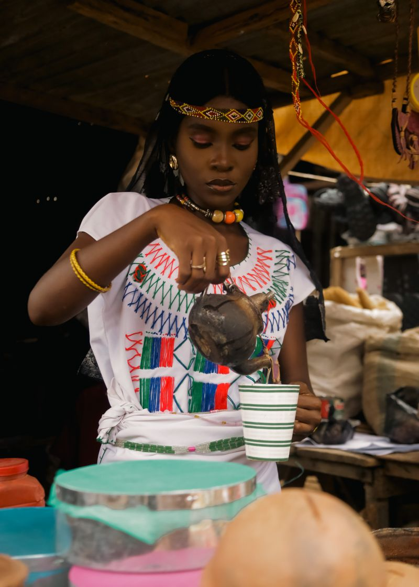
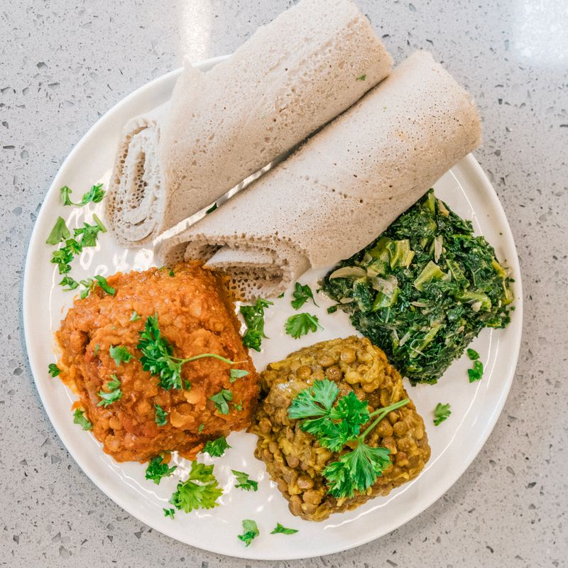
Latin American Cultures
Americas · Latin America & CaribbeanDemographics & Beliefs
Spanning 33 countries and home to over 650 million people, Latin America is defined by the profound concept of mestizaje—the historical blending of Indigenous, European, and African lineages. The predominant spiritual framework is Roman Catholicism, famously syncretized with Indigenous earth-worship (such as the reverence for Pachamama) and powerful African diasporic traditions. The cultural bedrock is familismo, a powerful dedication to the extended family unit. The calendar is punctuated by globally renowned, vibrantly colorful celebrations, from the immense Samba parades of Rio Carnival to the ancient Incan sun festival of Inti Raymi.
Culinary Traditions
Latin American cuisine gave the world its most vital crops—corn, potatoes, tomatoes, chocolate, and chili peppers—which remain the foundation of regional diets. Culinary traditions shift dramatically from the bright, citrus-cured Ceviche of the Pacific coast and the comforting corn Arepas of Venezuela and Colombia, to the slow-cooked Feijoada of Brazil and the massive wood-fired Asados of the Argentine Pampas. Street food culture thrives across the continent, acting as the great social equalizer.
History & Evolution
The continent's history is anchored by formidable pre-Columbian civilizations—the Maya, Aztec, and Inca—who engineered sprawling metropolises. The 15th-century arrival of Iberian conquerors triggered a devastating era of colonization, heavily influencing the region's languages (Spanish and Portuguese) and architecture. Following fiery 19th-century independence movements led by figures like Simón Bolívar and José de San Martín, the region forged powerful modern identities that balance ancient roots with rapid global modernization.
Notable Features & Figures
Latin American arts are globally celebrated for their emotional intensity, best encapsulated by the literary genre of Magical Realism, popularized worldwide by Gabriel García Márquez. The region's music is remarkably rich in rhythm, gifting the world Salsa, Tango, Samba, Bossa Nova, and Reggaeton, deeply influenced by African drumming traditions. The culture is represented by iconic figures across all disciplines, from visionary painters like Frida Kahlo and Fernando Botero to beloved musicians like Celia Cruz.
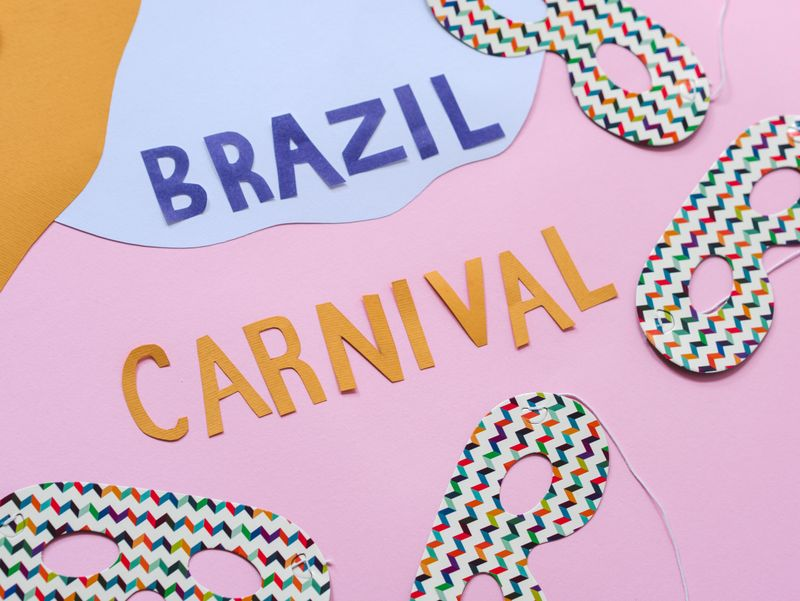
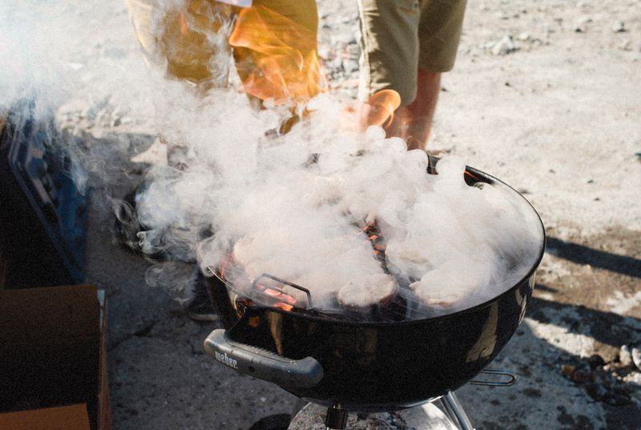
Brazilian Culture
Americas · South AmericaDemographics & Beliefs
Brazil is home to about 212 million people, the largest Portuguese-speaking population in the world. Its culture blends Indigenous, Portuguese, and African heritage with later waves of Italian, German, Japanese, and Arab immigrants; São Paulo has the largest Japanese community outside Japan. Brazil has the world's largest Catholic population, though evangelical Protestant churches have grown quickly, and Afro-Brazilian religions such as Candomblé and Umbanda remain influential. Warmth and informality are prized in social life, and Carnival is the year's great national celebration.
Culinary Traditions
Brazilian cooking varies by region: Afro-Brazilian dishes like moqueca (fish stew with coconut milk and palm oil) and acarajé in Bahia, Amazonian ingredients like açaí in the north, and the churrasco barbecue traditions of the southern gaúchos. Feijoada, a black bean and pork stew, is often called the national dish and is traditionally shared at long weekend lunches. Everyday staples include rice and beans, toasted cassava flour (farofa), and pão de queijo (cheese bread).
History & Evolution
The lands that became Brazil were home to millions of Indigenous people before the Portuguese navigator Pedro Álvares Cabral arrived in 1500. Sugar, gold, and later coffee economies relied on enslaved Africans; Brazil received more enslaved Africans than any other country in the Americas and was the last to abolish slavery, in 1888. Brazil became independent in 1822 as an empire under a Portuguese prince and a republic in 1889. In the 20th century, immigration and rapid urbanization shaped a modern, diverse nation.
Notable Features & Figures
Brazilian music has given the world samba, bossa nova (think "The Girl from Ipanema" by Antônio Carlos Jobim), and the Tropicália movement of Caetano Veloso and Gilberto Gil. Capoeira, an Afro-Brazilian art blending martial arts, dance, and music, is recognized by UNESCO. Brazil is football's most successful nation, with five World Cup titles, and the home of Pelé. Architect Oscar Niemeyer shaped the modernist capital Brasília, and writers like Machado de Assis and Clarice Lispector are celebrated worldwide.
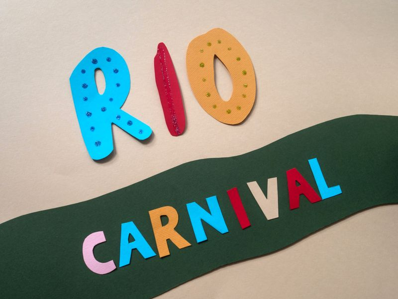
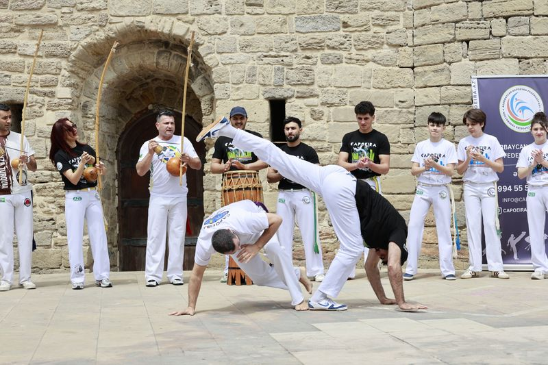
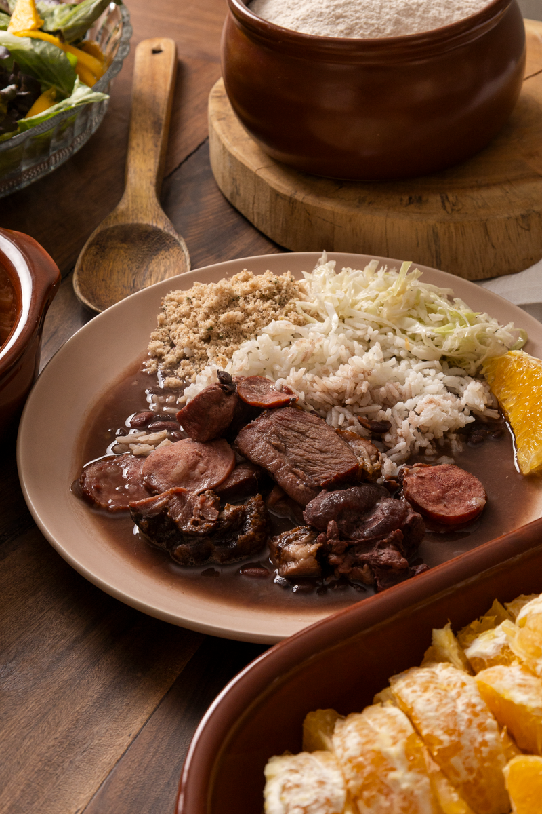
Mexican Culture
Americas · North AmericaDemographics & Beliefs
Representing a vibrant population of over 130 million natively, Mexican culture is a beautiful syncretism of Roman Catholicism and ancient Indigenous beliefs. This is most vividly expressed during annual festivals like Día de los Muertos, where families build magnificent altars (ofrendas) to joyfully remember deceased loved ones, and Las Posadas during the winter holidays. Rites of passage are monumental community events, especially the Quinceañera, which marks a young woman’s transition into adulthood. Traditional attire, from the embroidered Huipil to tailored Charro suits, reflects deep pride in regional heritage.
Culinary Traditions
Recognized by UNESCO as an Intangible Cultural Heritage of Humanity, Mexican cuisine is built upon the ancient Mesoamerican trinity of corn, beans, and chili peppers. Signature dishes require immense labor, such as complex Mole sauces featuring dozens of roasted ingredients, and handcrafted Tamales steamed in corn husks. Dining rituals are centered around the sobremesa—the cherished tradition of remaining at the table long after the meal has ended to share stories, digest, and connect.
History & Evolution
The cultural bedrock of Mexico was forged by advanced ancient civilizations, including the Olmec, Maya, and Zapotec civilizations and the Aztec Empire. A massive era of shift occurred during the 16th-century Spanish conquest, leading to mestizaje—the blending of Indigenous and European traditions. Independence from Spain (1810 to 1821) and the Mexican Revolution (1910 to 1920) shaped a modern national identity that proudly honors its Indigenous roots. Today, the modern diaspora continually adapts and preserves these traditions, maintaining strong transnational ties and influencing global art and music.
Notable Features & Figures
While Spanish is the dominant language, over 60 Indigenous languages, such as Nahuatl, are still proudly spoken today. Mexican arts are globally renowned for their bold colors and political messaging, best seen in 20th-century Muralism. The musical landscape pulses with the brass and strings of Mariachi and the storytelling ballads of Ranchera. The culture has produced iconic figures, from visionary artists like Diego Rivera to revolutionary heroes like Emiliano Zapata.
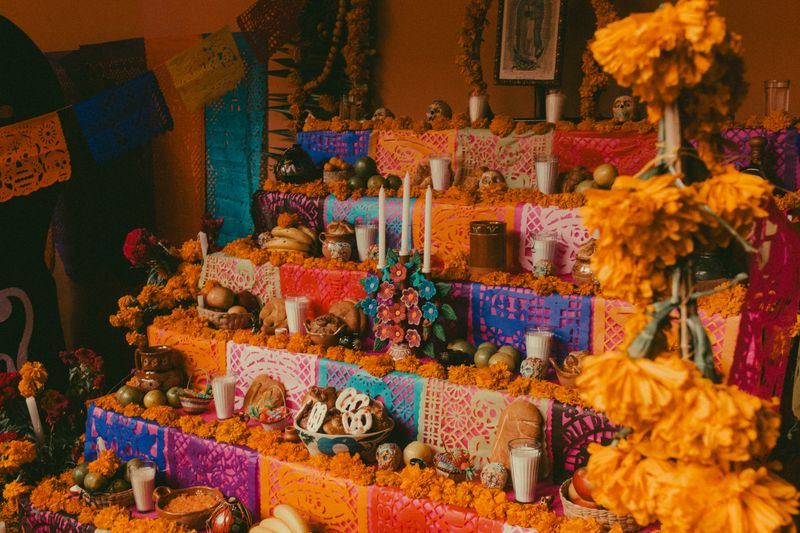
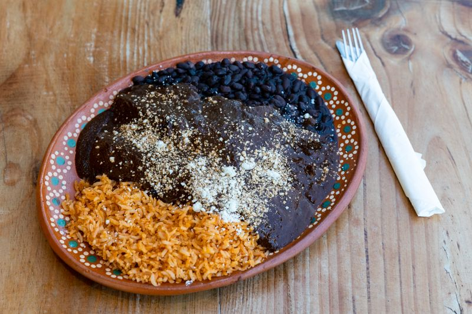
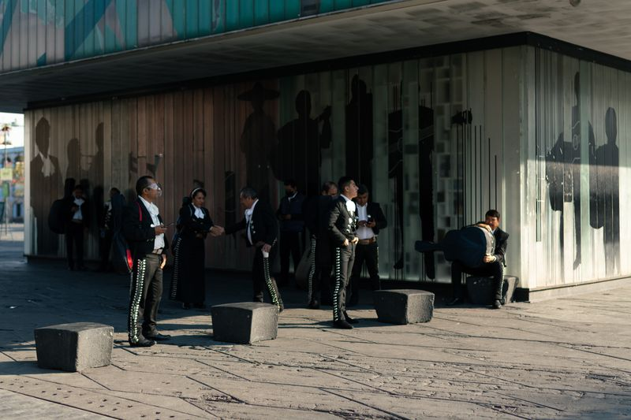
American (U.S.) Culture
Americas · North AmericaDemographics & Beliefs
Representing a population of about 340 million, the United States is often described as a cultural melting pot, defined not by a single ethnicity, but by a shared civic ideology. The cultural psyche is anchored by the "American Dream"—the belief in upward mobility, rugged individualism, and self-reliance. Secular civic holidays are the great unifiers, particularly Thanksgiving, which focuses on gratitude and family feasting, and the 4th of July, celebrating national independence. The approach to attire is heavily geared toward comfort, utility, and self-expression, having gifted the world universal fashion staples like denim jeans and sneakers.
Culinary Traditions
American cuisine is a landscape of profound fusion and agricultural abundance. Signature dishes are often regional and rooted in immigrant histories, ranging from the slow-smoked Barbecue and rich Soul Food of the Deep South to the iconic hamburgers, hot dogs, and apple pies that define the national palate. Dining rituals highly prioritize convenience and informal socialization, popularizing the drive-thru and the backyard cookout.
History & Evolution
Built upon the ancient lands of highly diverse Indigenous nations, the modern American state was forged through European colonization, a revolutionary war, and a brutal Civil War. The 19th and 20th centuries were defined by massive westward expansion, waves of global immigration, and the transformative Civil Rights movement. Emerging as an economic and military superpower, the United States became a leading exporter of modern lifestyle trends.
Notable Features & Figures
The United States is a major engine of modern artistic creation, serving as the birthplace of Jazz, Blues, Rock and Roll, and Hip-Hop, while Hollywood cinema shapes global storytelling. Architectural contributions are monumental, having invented the steel-frame skyscraper. The nation is defined by figures who altered global history, from leaders like Abraham Lincoln and Martin Luther King Jr. to cultural pioneers like Walt Disney.
Arab Culture
Middle East & North AfricaDemographics & Beliefs
Spanning across the Middle East and North Africa, Arab culture unites about 470 million people across 22 Arab League states through deeply woven linguistic and historical roots. While the region is the birthplace of Islam, it also hosts ancient and resilient Christian and Jewish communities. Social life is heavily governed by Karam (boundless generosity) and a deep-seated dedication to family honor. These values are most vividly on display during major religious festivals such as Eid al-Fitr and Eid al-Adha. Traditional aesthetics are elegant and climate-conscious, featuring flowing garments like the crisp thobe and the iconic keffiyeh headwear.
Culinary Traditions
Arab gastronomy is an exercise in ancient hospitality and historic trade routes, utilizing staple ingredients like sweet dates, pure olive oil, slow-roasted lamb, saffron, and fresh mint. Signature culinary creations range from the Levantine perfection of Hummus and Shawarma to the richly spiced Kabsa of the Gulf. Dining rituals are intensely communal; meals are frequently served on a large central sufra spread on the floor, where guests gather in a circle, eating with their right hand to symbolize purity and unity.
History & Evolution
Tracing its foundational roots to the Bedouin tribes and ancient kingdoms of the Arabian Peninsula, such as the Nabataeans and Saba, the culture experienced a massive era of shift during the 7th century with the rapid spread of Islam. This catalyzed the monumental Islamic Golden Age, where Arab metropolises like Baghdad became global epicenters for mathematics, medicine, and philosophy. Today, a vast and dynamic diaspora fiercely preserves its heritage while contributing profoundly to global arts and sciences.
Notable Features & Figures
The unifying thread of the culture is the Arabic language, celebrated for its poetic depth. Islamic artistic traditions prioritize intricate geometric arabesques and masterful calligraphy over figurative depictions. Architectural marvels define the landscape, from tranquil interior courtyards to majestic domes. The culture is immortalized by legendary figures like the Egyptian vocalist Umm Kulthum, alongside historical titans like Ibn al-Haytham, a pioneer of optics, and the historian Ibn Khaldun.
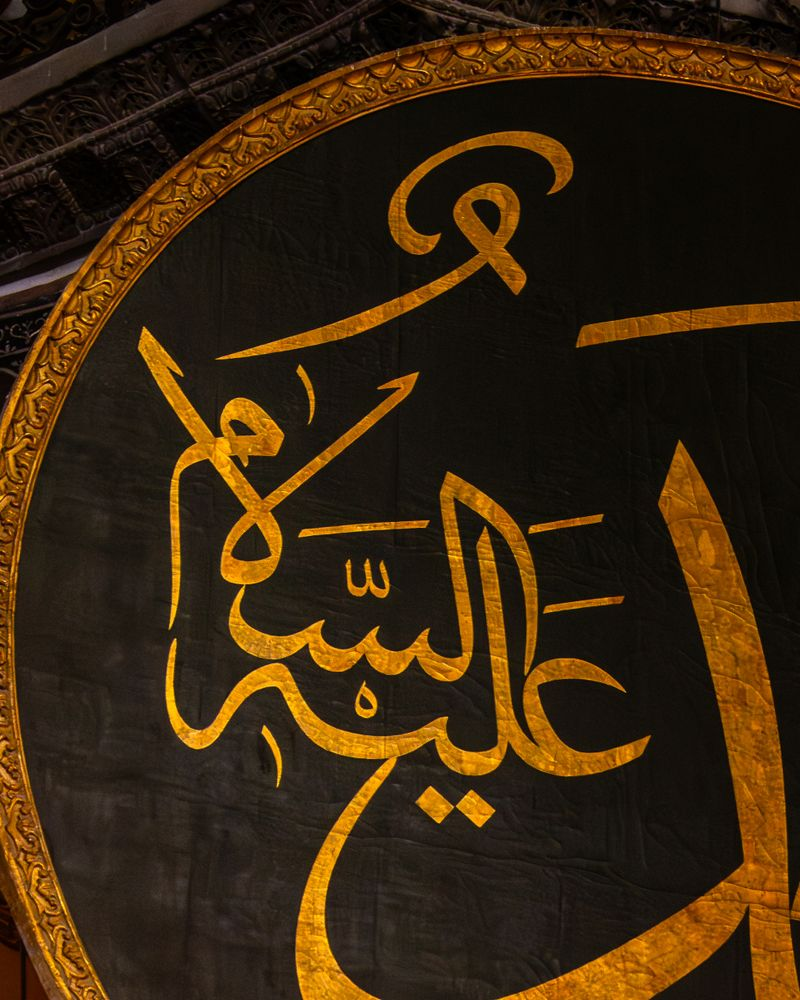
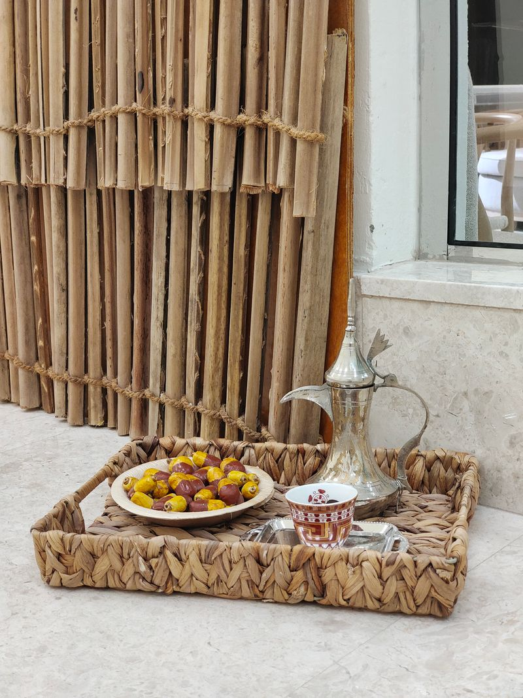
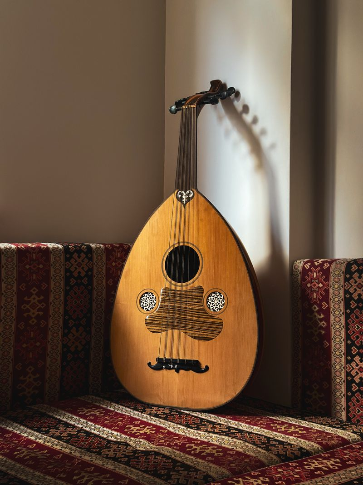
Persian Culture
Middle East · Iran & West AsiaDemographics & Beliefs
Centered in modern-day Iran, a multi-ethnic nation of about 90 million people (roughly half of them ethnically Persian), Persian culture also lives on in Persian-speaking Afghanistan and Tajikistan and in a vibrant global diaspora. While the dominant modern religion is Shia Islam, the culture’s spiritual foundation is deeply tied to the ancient tenets of Zoroastrianism. Daily social life is governed by Ta'arof, an intricate, poetic system of politeness and hospitality. These values peak during Nowruz, the ancient Persian New Year celebrated on the spring equinox, involving the symbolic Haft-Sin table arrangement to welcome renewal.
Culinary Traditions
Persian culinary traditions heavily utilize precious ingredients like saffron, rosewater, dried limes, pomegranate, and walnuts. Signature dishes include Ghormeh Sabzi, a deeply aromatic herb and lamb stew. Dining rituals are rooted in ancient medicinal philosophies that balance "hot" and "cold" natured foods. Meals are traditionally shared over expansive spreads, often featuring platters of perfectly steamed long-grain rice crowned with a crispy, golden crust known as Tahdig.
History & Evolution
Persian history traces back to the formidable Achaemenid Empire founded by Cyrus the Great in the 6th century BCE, representing one of history's first super-states to embrace religious tolerance. Global interaction was sustained for centuries via the Silk Road, positioning Persia as a central conduit for trade and poetry. Today, a highly educated modern diaspora flourishes globally, particularly in Southern California's "Tehrangeles."
Notable Features & Figures
The culture is bound by the Persian language (Farsi), revered for its inherent poetic rhythm. The arts are renowned for their intricate detail, most famously realized in miniature paintings and hand-woven Persian carpets. Architecture embraces majestic blue-tiled mosques and walled paradise gardens. The culture is immortalized by the mystic poet Rumi, the lyric poet Hafez, and the epic poet Ferdowsi, whose verses remain beloved worldwide.
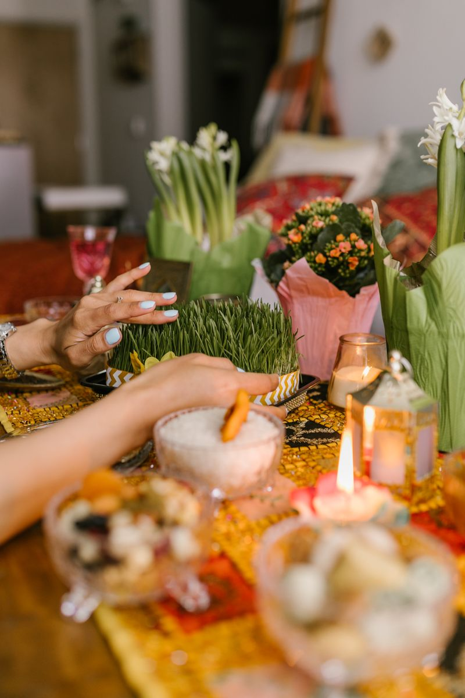
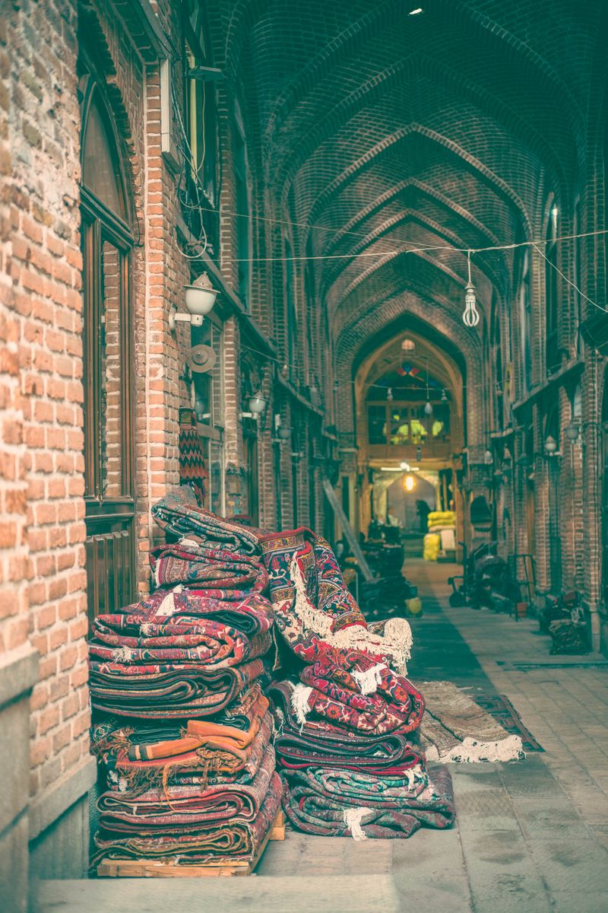
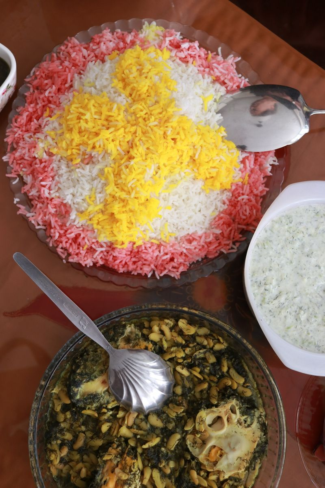
Turkish Culture
Middle East · Anatolia & ThraceDemographics & Beliefs
Turkish culture is centered in Turkey, a multi-ethnic country of about 86 million that straddles Europe and Asia, with large diaspora communities in Germany, the Netherlands, and beyond. Most Turks are Sunni Muslims, alongside a significant Alevi community and small Christian and Jewish minorities, while the Republic has been officially secular since the 1920s. Hospitality is a point of honor, and guests are welcomed with tea, Turkish coffee, and sweets. Major celebrations include Ramazan Bayramı (Eid al-Fitr), Kurban Bayramı (Eid al-Adha), and Republic Day on 29 October.
Culinary Traditions
Turkish cuisine blends the heritage of Central Asian nomads, Anatolian farmers, and the Ottoman palace kitchens. Staples include bread, yogurt, bulgur, eggplant, and lamb, with signature dishes ranging from kebabs and stuffed vegetables (dolma) to meze spreads and syrup-soaked baklava. Strong black tea is served throughout the day in tulip-shaped glasses, and Turkish coffee culture is recognized by UNESCO as Intangible Cultural Heritage. A long weekend kahvaltı (breakfast) with family is a cherished ritual.
History & Evolution
Anatolia is one of the oldest inhabited regions on Earth, home to Göbekli Tepe, the Hittites, ancient Troy, and the Byzantine capital Constantinople. Turkic peoples migrated from Central Asia, and after the Seljuk victory at Manzikert in 1071 they settled across Anatolia. The Ottoman Empire, which took Constantinople in 1453, ruled much of southeastern Europe, the Middle East, and North Africa for centuries. After its collapse, Mustafa Kemal Atatürk founded the Republic of Turkey in 1923, introducing sweeping secular reforms and a Latin-based Turkish alphabet.
Notable Features & Figures
Turkish is a Turkic language related to Azerbaijani, Uzbek, and Kazakh. Architectural masterpieces include Hagia Sophia and the mosques of the great Ottoman architect Mimar Sinan, such as the Süleymaniye. The arts include marbled paper (ebru), Iznik tilework, carpet and kilim weaving, and the meditative whirling ceremony (sema) of the Mevlevi order, founded by followers of Rumi in Konya. Notable figures include the folk poet Yunus Emre and the Nobel Prize-winning novelist Orhan Pamuk.
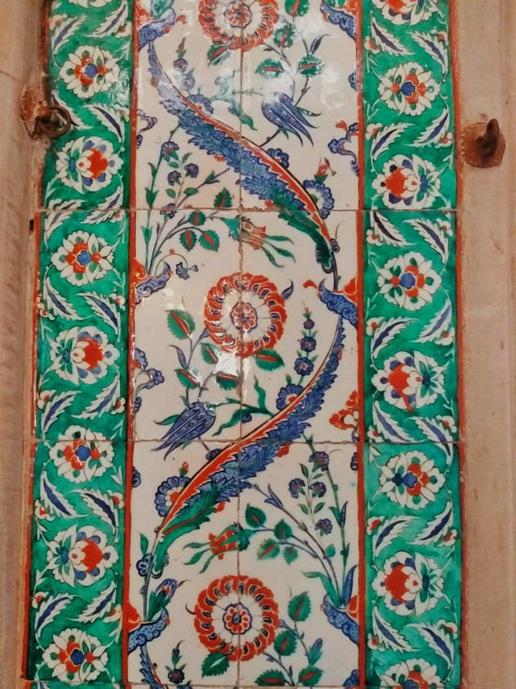
Jewish Cultures
Global · Israel & DiasporaDemographics & Beliefs
Jewish culture belongs to a people of about 15.8 million worldwide, most of whom live in Israel and the United States, with significant communities in France, Canada, the United Kingdom, Argentina, and elsewhere. Jewish identity combines religion, peoplehood, and culture, and many secular Jews feel strong cultural ties. Judaism is the faith at its center (see our Judaism page), while customs vary across the main heritage communities: Ashkenazi (Central and Eastern Europe), Sephardi (Iberia and the Mediterranean), Mizrahi (the Middle East and North Africa), and Ethiopian Jews (Beta Israel), among others. The weekly Shabbat and festivals like Passover, Rosh Hashanah, Yom Kippur, and Hanukkah shape the calendar.
Culinary Traditions
For observant families, Jewish food follows the dietary laws of kashrut, separating meat and dairy and avoiding pork and shellfish, while adapting to every land Jews have lived in. Ashkenazi kitchens gave the world bagels, challah, matzah ball soup, and gefilte fish; Sephardi and Mizrahi cooking features North African shakshuka, flaky bourekas, and slow-cooked Sabbath stews like dafina. The Friday night Shabbat dinner, opening with blessings over wine and challah, and the Passover Seder, which retells the Exodus around a symbolic plate, are among the most cherished family rituals.
History & Evolution
Jewish history begins in the ancient Land of Israel, with the kingdoms of Israel and Judah and the Temple in Jerusalem. After the Babylonian exile and the Roman destruction of the Second Temple in 70 CE, Jewish communities spread across the Middle East, North Africa, and Europe, at times flourishing, as in the golden age of Muslim Spain, and at times facing persecution and expulsion. The Holocaust murdered six million Jews, about a third of the world's Jewish population. The State of Israel was founded in 1948, and Jewish communities worldwide maintain strong ties to one another.
Notable Features & Figures
Hebrew, the ancient language of scripture, was revived as an everyday spoken language in the late 19th and 20th centuries and is now spoken by millions in Israel. Diaspora languages include Yiddish among Ashkenazim and Ladino (Judeo-Spanish) among Sephardim, each with a rich literary tradition. Jewish culture prizes learning, debate, and humor, and its music ranges from synagogue chant to klezmer. Notable figures include the philosopher Maimonides, the physicist Albert Einstein, the writer Franz Kafka, and Nobel laureates Isaac Bashevis Singer (literature) and Elie Wiesel (peace).
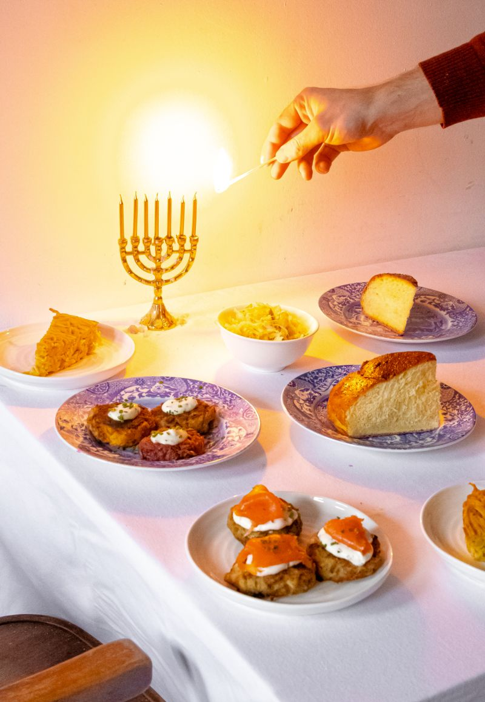
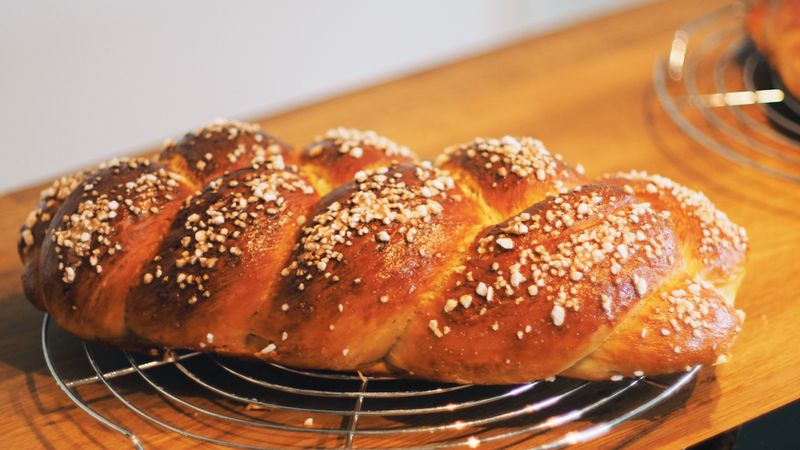
Indian Culture
Asia · South AsiaDemographics & Beliefs
Centered in the South Asian subcontinent, Indian culture represents more than 1.45 billion people and stands as one of the oldest, most complex civilizations on Earth. It is the spiritual birthplace of Hinduism, Buddhism, Jainism, and Sikhism. Daily life is profoundly influenced by the concepts of Dharma (duty) and the enduring structure of the joint family system. The calendar is a relentless cycle of vibrant festivals, including the luminous celebrations of Diwali and the exuberant color-throwing of Holi. Traditional attire prominently features the elegant draped Sari for women and the tailored Kurta for men.
Culinary Traditions
Indian cuisine is a masterclass in the medicinal and culinary use of spices—such as turmeric, cumin, cardamom, and coriander. Signature dishes vary dramatically by region, from the slow-cooked Biryanis of Lucknow and Hyderabad and the tandoori breads of Punjab to the fermented, crispy Masala Dosas of the South. Dining rituals often involve eating with the hands to fully engage the senses, traditionally served on a Thali (a large platter holding multiple small bowls), showcasing a long and sophisticated vegetarian tradition.
History & Evolution
The cultural timeline stretches back millennia to the advanced urban planning of the Indus Valley Civilization. It has been shaped by a succession of golden eras and powerful empires, including the Maurya dynasty and the architectural opulence of the Mughal Empire. In 1947, a largely non-violent struggle won independence, though it came with the painful Partition of India and Pakistan. Today, the Indian diaspora is a massive global force, heavily influencing global technology and medicine.
Notable Features & Figures
India is a linguistic powerhouse, home to hundreds of languages, with Hindi, Bengali, Marathi, Telugu, and Tamil being among the most spoken. The classical arts are highly codified, featuring expressive dance forms like Bharatanatyam. Architectural heritage is breathtaking, ranging from ancient stepwells to the stunning Indo-Islamic symmetry of the Taj Mahal. The culture has produced global icons, most notably Mahatma Gandhi and Rabindranath Tagore.
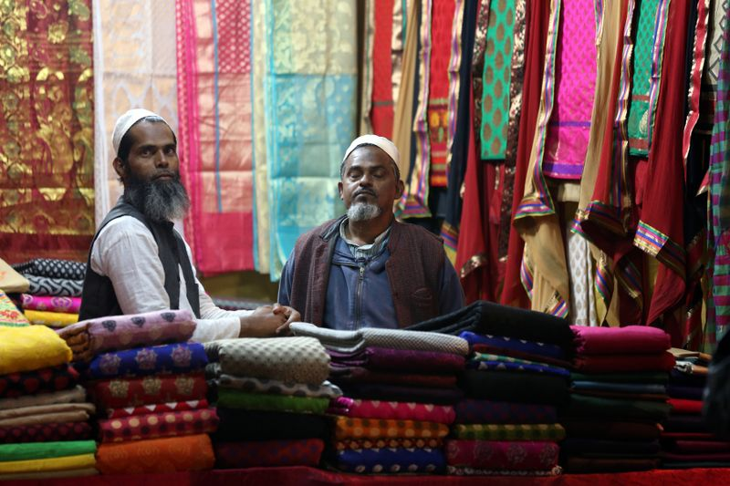
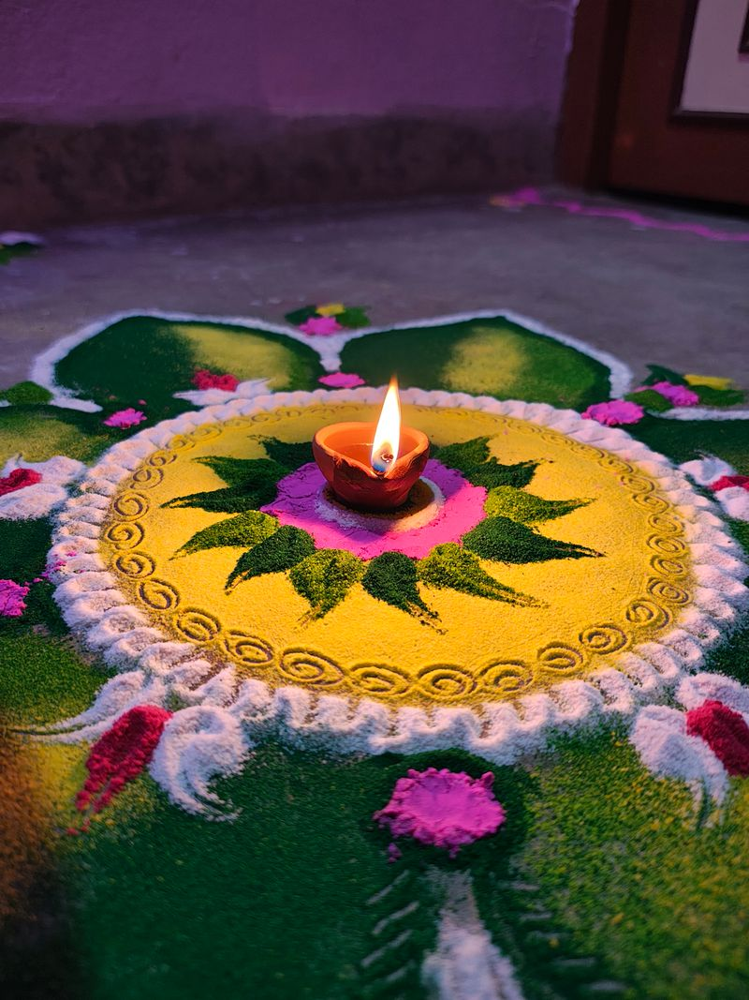
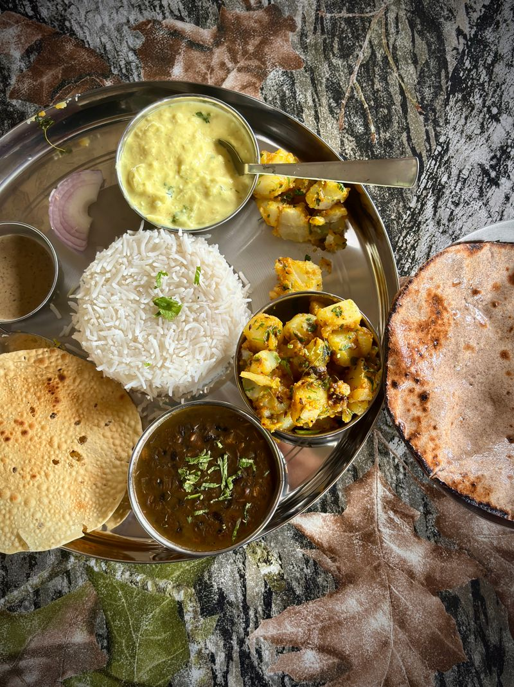
Han Chinese Culture
Asia · East AsiaDemographics & Beliefs
Rooted primarily in Greater China with a massive global diaspora, the Han Chinese constitute the world's largest ethnic group, numbering roughly 1.3 billion people. Foundational spiritual practices deeply interweave Confucianism, Taoism, Buddhism, and Chinese folk religion, though many Han Chinese today describe themselves as non-religious. Daily life is heavily influenced by filial piety, ensuring profound respect for elders and strong familial bonds. These values culminate during vibrant annual festivals, most notably the Lunar New Year and the Mid-Autumn Festival, where families gather to honor ancestors.
Culinary Traditions
Chinese culinary heritage relies heavily on staple ingredients like soy sauce, rice, wheat noodles, ginger, garlic, and scallions to create deeply complex flavor profiles. Signature dishes vary wildly by geography—from the delicate, steamed Dim Sum of the south to the rich, slow-roasted Peking Duck of the north. Dining rituals prioritize communal unity and harmony; meals are typically served on a lazy Susan in the center of a round table, allowing all guests to share equally from central plates.
History & Evolution
Originating in the fertile basin of the Yellow River, the Han civilization is one of the world's most enduring continuous cultural entities. The culture underwent massive shifts through dynastic eras—most notably the Han, Tang, and Ming periods. The culture's global interaction was profoundly shaped by the ancient Silk Road and remarkable technological innovations, introducing paper, printing, gunpowder, and the magnetic compass (the "Four Great Inventions") to the world.
Notable Features & Figures
While bound by a single written script, the culture is incredibly linguistically diverse, encompassing major spoken subgroups like Mandarin, Wu, and Yue (Cantonese). The arts are defined by the elegant mastery of brush calligraphy and jade carving. Architectural philosophies emphasize harmony with nature, utilizing Siheyuan courtyard layouts. The philosophical bedrock of the culture was laid by immense historical figures, notably Confucius and Sun Tzu.
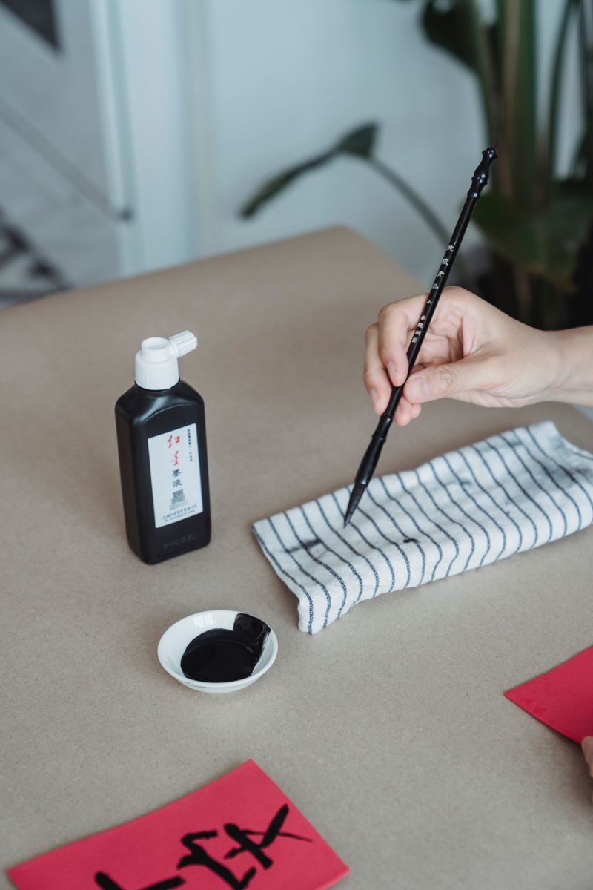
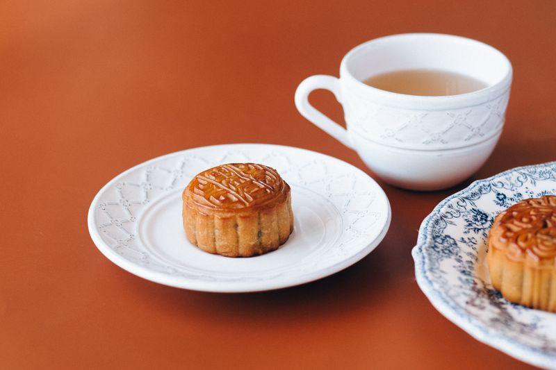
Japanese Culture
Asia · East AsiaDemographics & Beliefs
Japanese culture informs the lives of about 124 million people and is renowned for its seamless integration of ancient tradition with hyper-modernity. The spiritual landscape is a unique syncretism of indigenous Shintoism—which finds divine spirits in nature—and imported Buddhism. Social mechanics are governed by Wa (group harmony) and Omotenashi, a philosophy of wholehearted hospitality. The changing of the seasons dictates the cultural calendar, celebrated during local shrine festivals and the national phenomenon of Hanami (cherry blossom viewing).
Culinary Traditions
Japanese culinary tradition, or Washoku, prioritizes the pure, unmasked flavor of fresh ingredients, relying on staples of short-grain rice, supreme-quality seafood, and miso. Signature dishes range from the globally beloved precision of Sushi to the elite, multi-course seasonal poetry of Kaiseki dining. Dining rituals are highly respectful; meals begin with the phrase "Itadakimasu" (I humbly receive) to honor the life given and the labor of the chef.
History & Evolution
Japanese history is characterized by a long period of deliberate isolation (the 1630s to the 1850s) followed by eras of rapid modernization. From the refined courtly life of the Heian period to the centuries of military rule by the Shogunate, the culture absorbed ideas from China and Korea, including writing and Buddhism, and reshaped them into something distinctly its own. Following the devastation of World War II, Japan experienced an economic miracle that transformed it into a global technological powerhouse, shaping global youth culture through anime and design.
Notable Features & Figures
The Japanese language utilizes three distinct writing systems: Kanji, Hiragana, and Katakana. Traditional arts are focused on mindfulness and mastery, seen in Origami and the highly choreographed Tea Ceremony. Architecture emphasizes a seamless transition between indoors and nature, featuring translucent shoji screens. Cultural titans range from historical unifiers like Tokugawa Ieyasu to modern cinematic geniuses like Akira Kurosawa.
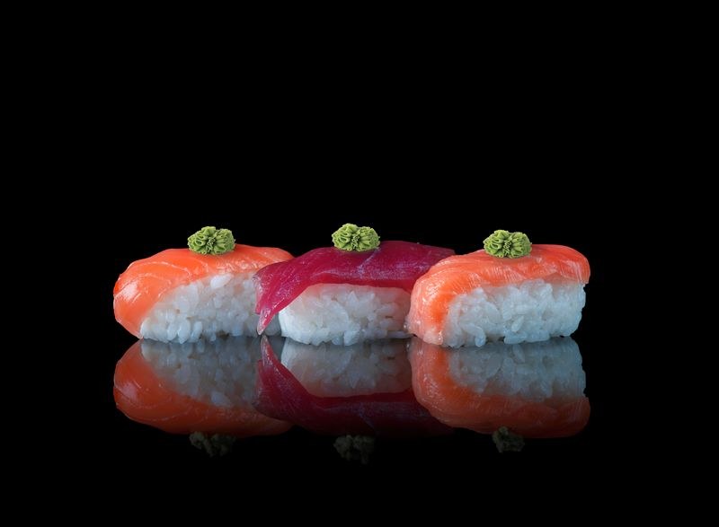
Korean Culture
Asia · East AsiaDemographics & Beliefs
Korean culture is shared by about 78 million people across South and North Korea and a diaspora of more than 7 million, with large communities in China, the United States, and Japan. South Korea is one of the world's most religiously diverse societies: roughly half of its people are non-religious, while Christianity and Buddhism are the largest faiths, and older shamanic traditions survive in rituals led by mudang. Confucian values shape daily life, from respect for elders and honorific speech to jesa ancestral rites. The great family holidays are Seollal (Lunar New Year) and Chuseok, the autumn harvest festival.
Culinary Traditions
Korean meals are built around rice, a soup or stew, and a spread of shared side dishes called banchan. Fermentation is central: kimchi, made each autumn in the communal tradition of kimjang (recognized by UNESCO), sits alongside fermented soybean paste (doenjang) and chili paste (gochujang). Signature dishes include bibimbap, bulgogi, and hearty stews like kimchi jjigae. Dining etiquette is respectful: younger diners traditionally wait for the eldest to begin eating.
History & Evolution
Korean history is traditionally traced to the ancient kingdom of Gojoseon, followed by the Three Kingdoms of Goguryeo, Baekje, and Silla. The Goryeo dynasty, which gave Korea its English name, and the long-lived Joseon dynasty (1392 to 1897) built a highly literate Confucian state. Japanese colonial rule (1910 to 1945) was followed by the division of the peninsula and the Korean War (1950 to 1953). South Korea then achieved one of the fastest economic transformations in history, while North Korea remains a closed state.
Notable Features & Figures
In 1443, King Sejong the Great created Hangul, an alphabet designed so that ordinary people could learn to read, and it is celebrated today with its own national holiday. Korea also produced the Jikji (1377), the oldest surviving book printed with movable metal type. Traditional arts include celadon pottery, pansori storytelling song, and the graceful hanbok. Today the Hallyu, or "Korean Wave," of K-pop, film, and television, from BTS to the Oscar-winning film Parasite, carries Korean culture worldwide.
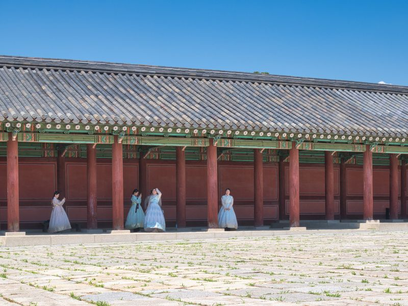
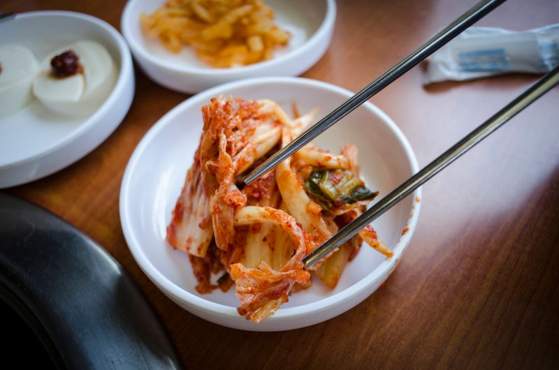
Filipino Culture
Asia · Southeast AsiaDemographics & Beliefs
The Philippines, an archipelago of more than 7,600 islands, is home to about 115 million people, and around 10 million more Filipinos live and work abroad. It is Asia's largest predominantly Christian nation: about eight in ten Filipinos are Catholic, while Muslims, concentrated in Mindanao, form the largest religious minority, alongside many Indigenous peoples. Life centers on family and community, expressed through bayanihan (communal unity and cooperation) and utang na loob (a debt of gratitude). The Christmas season famously begins in September, and towns honor patron saints with colorful fiestas such as Sinulog and Ati-Atihan.
Culinary Traditions
Filipino cuisine combines Austronesian roots with Chinese, Spanish, and American influences. Rice is eaten at nearly every meal, and many dishes balance sour, salty, and sweet flavors. Adobo, meat braised in vinegar, soy sauce, garlic, and bay leaves, is often called the national dish, alongside the sour tamarind soup sinigang and festive whole roast pig (lechon). Eating by hand (kamayan) from banana leaves is a joyful communal tradition, and merienda afternoon snacks are a daily ritual.
History & Evolution
Austronesian peoples settled the islands thousands of years ago, building trading societies linked to China, Southeast Asia, and the Muslim sultanates of Sulu and Maguindanao. Ferdinand Magellan's expedition arrived in 1521, and Spain ruled the islands for over three centuries, naming them after King Philip II. The Philippine Revolution of 1896 was followed by American colonial rule and Japanese occupation in World War II, before independence in 1946. The 1986 People Power Revolution peacefully restored democracy.
Notable Features & Figures
More than 170 languages are spoken, with Filipino (based on Tagalog) and English as the official languages. José Rizal, the national hero, inspired the independence movement through his novels Noli Me Tángere and El Filibusterismo. Cultural landmarks include the UNESCO-listed Rice Terraces of the Philippine Cordilleras, the bamboo-pole dance tinikling, and the brightly decorated jeepney. Filipinos are celebrated for their love of music, and notable figures include boxing champion Manny Pacquiao and Broadway star Lea Salonga.
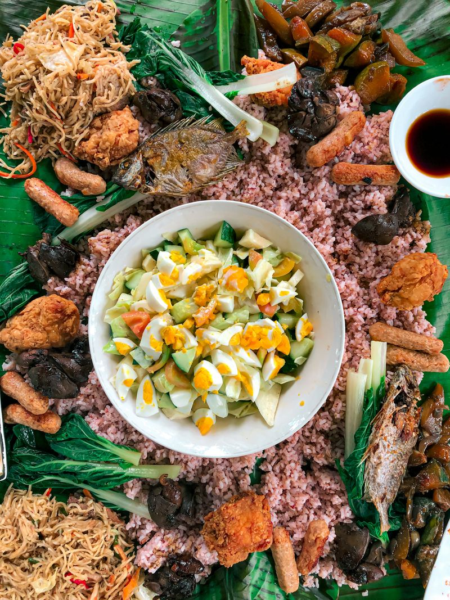
French Culture
Europe · Western EuropeDemographics & Beliefs
With a national population of about 68 million, French culture extends far beyond its European borders to influence a vast global Francophone sphere. Modern France is fiercely protective of laïcité (the strict separation of religion from the state and public institutions). Daily life is characterized by a deep appreciation for intellectual debate and an unwavering commitment to work-life balance. The national calendar peaks on Bastille Day, a grand celebration of the republic's founding values. France is the historical home of haute couture, viewing fashion as an essential expression of elegance and artistry.
Culinary Traditions
French gastronomy is enshrined by UNESCO, operating on absolute respect for terroir. Built upon foundational pillars of butter, artisanal cheeses, world-class wines, and daily-baked baguettes, signature dishes like Coq au Vin and Boeuf Bourguignon showcase refined culinary technique. Dining rituals are sacred; meals are leisurely, multi-course events strictly meant for sitting at a table with friends and family, actively resisting the culture of rushed, on-the-go consumption.
History & Evolution
From its ancient Celtic Gaulish roots, France has been at the geographic and political center of Europe. It defined absolute monarchy before the explosive French Revolution of 1789 completely upended global political thought. Through subsequent empires, devastating World Wars, and a controversial global colonial history, France has consistently exported its philosophies of human rights and republicanism. Today, it remains a pillar of the European Union.
Notable Features & Figures
The French language is famously protected by the Académie Française and is spoken globally as a language of diplomacy. French artistic contributions are monumental, having pioneered the Impressionist movement and early cinema. The architectural landscape is breathtaking, juxtaposing Gothic cathedrals like Notre-Dame with the elegant Haussmann apartment blocks of Paris. The culture has produced global titans like Victor Hugo and groundbreaking scientists like the Polish-born Marie Curie.
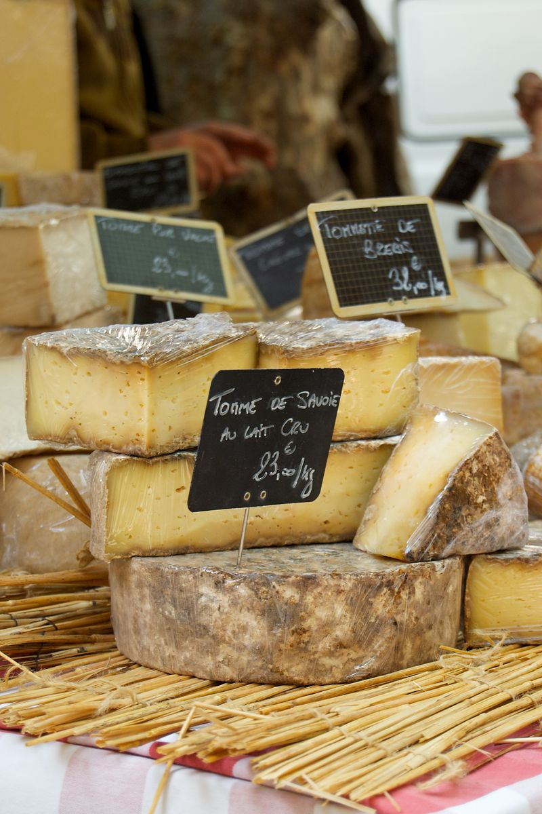
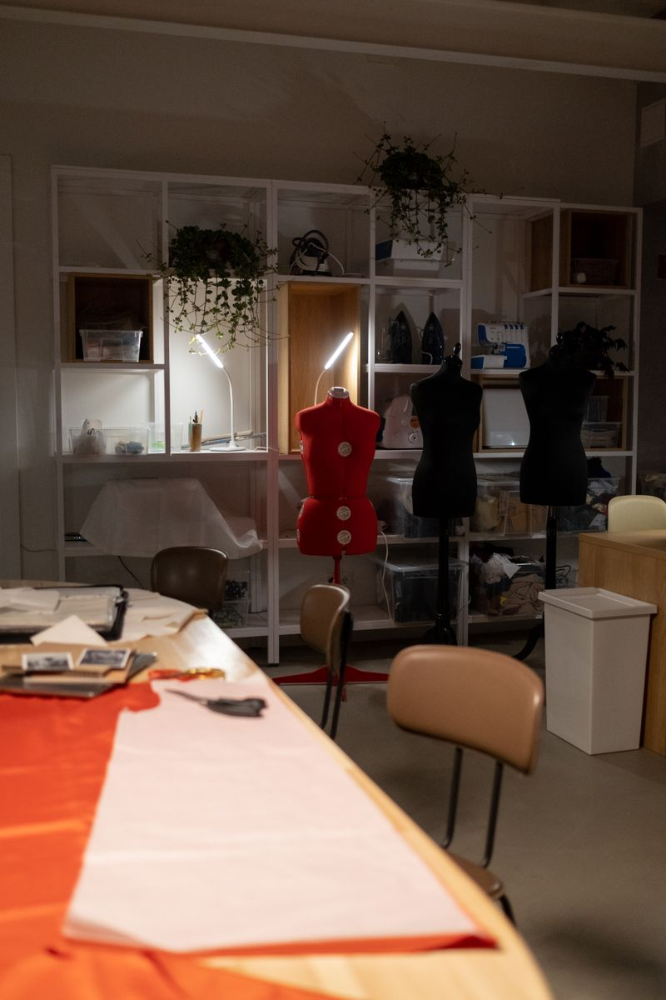
Italian Culture
Europe · Southern EuropeDemographics & Beliefs
Emanating from the Mediterranean peninsula, Italian culture informs the daily lives of about 59 million nationals and an estimated 60 to 80 million people of Italian descent worldwide. The spiritual landscape is deeply interwoven with Roman Catholicism, surrounding Vatican City, the independent seat of the Catholic Church. Daily life operates on a rhythm that fiercely protects work-life balance, exemplified by the passeggiata, a leisurely evening community stroll. Family networks anchor frequent gatherings and local festivals celebrating regional patron saints. Traditional regional dress has given way to an international reputation for sartorial elegance and effortless grace (sprezzatura).
Culinary Traditions
Italian gastronomy is founded on a philosophy of profound simplicity, relying on the exceptional quality of local, seasonal ingredients. The staples—olive oil, wheat, tomatoes, garlic, and wine—form the backbone of hyper-regionalized dishes, from the rich risottos of the North to the bright, tomato-based pizzas and dried pastas of the South. Dining rituals are highly structured, multi-course affairs (antipasto, primo, secondo, dolce) designed to pace conversation and connection.
History & Evolution
The Italian peninsula has served as a crucible for Western civilization, acting as the epicenter of the Roman Empire, which standardized law and engineering. Following the Middle Ages, the region sparked the Renaissance in city-states like Florence and Venice, fundamentally shifting global perspectives on humanism and science. Millions of Italians migrated globally during the late 19th and early 20th centuries, taking their culture with them. Today, the modern diaspora transforms global culinary scenes and maintains strong transnational identities.
Notable Features & Figures
Unified by the melodious Italian language, the culture boasts an extraordinary artistic legacy. The peninsula holds more UNESCO World Heritage sites than any other nation, featuring architectural marvels spanning Roman aqueducts and Renaissance domes. Musically, Italy is the birthplace of opera and of the modern musical staff, developed by the monk Guido of Arezzo. The culture's prominent figures constitute a pillar of global history, from visionary polymaths like Leonardo da Vinci and Galileo Galilei to literary giants like Dante Alighieri.
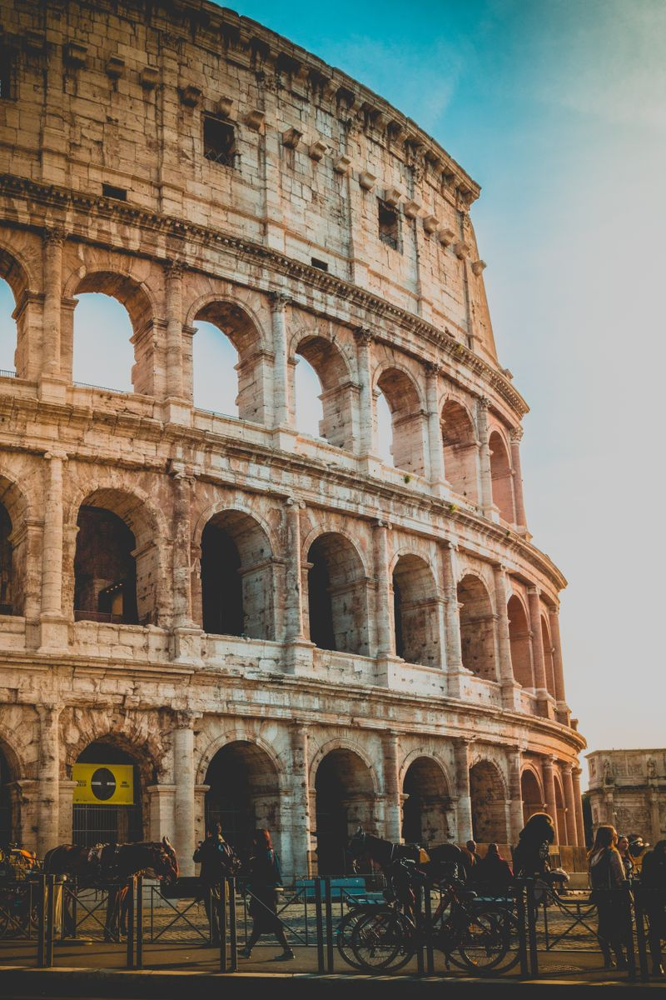
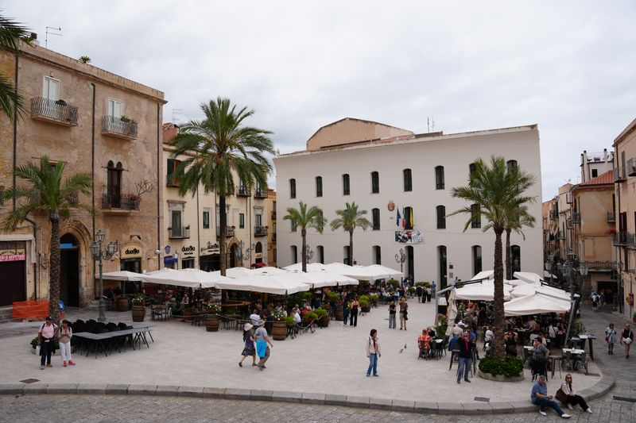
Greek Culture
Europe · Southern EuropeDemographics & Beliefs
Greek culture lives in Greece (about 10.4 million people), Cyprus, and a diaspora of several million in the United States, Australia, Germany, and beyond; Melbourne has one of the largest Greek-speaking communities outside Greece. Most Greeks identify with the Greek Orthodox Church, and Easter (Pascha) is the high point of the year, with candlelit midnight services and red-dyed eggs. Name days, the feast of the saint one is named after, are often celebrated more than birthdays. Philoxenia, literally "love of strangers," makes hospitality a sacred duty.
Culinary Traditions
Greek cuisine is a cornerstone of the Mediterranean diet, recognized by UNESCO, built on olive oil, vegetables, legumes, bread, cheese, fish, and wine. Signature dishes include moussaka, souvlaki, spanakopita, and fresh horiatiki (village salad) with feta. Meals often begin with shared mezedes, and Orthodox fasting periods have produced a rich tradition of olive-oil-braised vegetable dishes known as ladera. Dining is long and social, often continuing late into the evening at a taverna.
History & Evolution
Greek history stretches from the Bronze Age Minoan and Mycenaean civilizations to the city-states of the Classical era, when Athens developed early democracy, drama, and philosophy. Alexander the Great spread Greek language and culture from Egypt to India, and Greek became the language of the Eastern Roman (Byzantine) Empire. After nearly four centuries of Ottoman rule, the Greek War of Independence began in 1821, leading to the modern Greek state. Today Greece is a member of the European Union.
Notable Features & Figures
Greek has written records going back more than 3,000 years, making it one of the oldest recorded living languages, and its alphabet is the ancestor of the Latin and Cyrillic scripts. Ancient Greece gave the world the Olympic Games, theater, and foundations of philosophy, mathematics, and medicine. The Parthenon and the Byzantine monasteries of Mount Athos remain landmarks of human heritage. Notable figures range from Homer, Socrates, Plato, and Aristotle to the Nobel Prize-winning poets George Seferis and Odysseas Elytis.
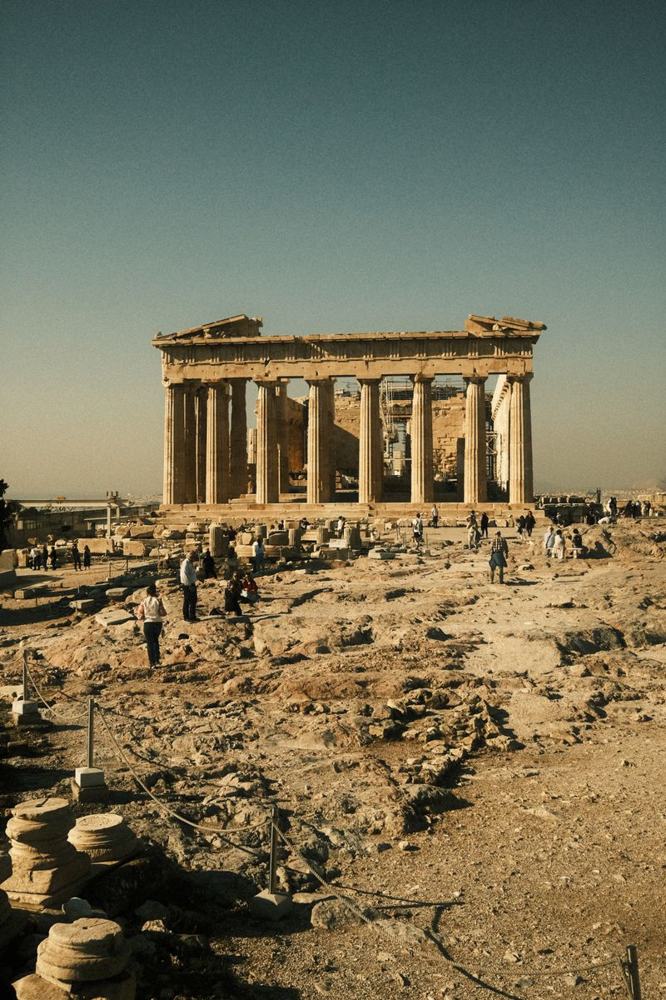
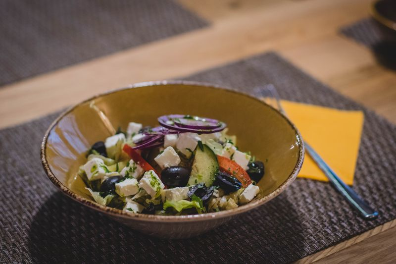
Polynesian Cultures
Oceania · PolynesiaDemographics & Beliefs
Polynesia, meaning "many islands," is a vast triangle of the Pacific Ocean framed by Hawai'i, Aotearoa New Zealand, and Rapa Nui (Easter Island), with Samoa, Tonga, Tahiti, and the Cook Islands within it. Its peoples, roughly two million including large communities in New Zealand, Australia, and the United States, share related languages and traditions. Most Polynesians today are Christian, following 19th-century missions, yet ancestral concepts remain powerful: mana (spiritual power and prestige), tapu (the sacred or restricted), and genealogy (whakapapa in Māori) linking people to ancestors, land, and sea. Extended family and respect for chiefs and elders anchor community life.
Culinary Traditions
Traditional Polynesian food comes from land and sea: taro, breadfruit, yams, sweet potato (kūmara), coconut, fish, and pork. Feasts are cooked in earth ovens, called umu in Samoa and Tonga, hāngī by Māori, and imu in Hawai'i, where food steams slowly over hot stones. Signature dishes include Hawaiian poi (pounded taro) and poke, Samoan palusami (taro leaves baked in coconut cream), and raw fish marinated in citrus and coconut milk, known as 'ota 'ika in Tonga and poisson cru in Tahiti. Food is shared generously at communal feasts that mark every important occasion.
History & Evolution
The ancestors of Polynesians were Austronesian voyagers who reached Tonga and Samoa about 3,000 years ago, then made some of history's greatest ocean journeys, settling Hawai'i, Rapa Nui, and finally Aotearoa New Zealand around 1250 to 1300 CE. They navigated thousands of kilometers by reading stars, swells, winds, and birds from double-hulled voyaging canoes. European contact from the 18th century brought disease, missionaries, and colonization, including the overthrow of the Hawaiian Kingdom in 1893. Since the 1970s, a cultural renaissance, symbolized by the voyaging canoe Hōkūle'a, has revived traditional navigation, languages, and arts.
Notable Features & Figures
Polynesian languages such as Māori, Samoan, Tongan, Tahitian, and Hawaiian belong to the Austronesian family and share many words. Art forms include tattooing (the English word "tattoo" comes from Polynesian tatau), wood and stone carving, the monumental moai of Rapa Nui, and barkcloth (tapa). Dance tells stories, from the Hawaiian hula to the Māori haka, performed worldwide by New Zealand's All Blacks. Notable figures include Queen Lili'uokalani, the last monarch of Hawai'i, and master navigator Nainoa Thompson, a leader of the wayfinding revival.